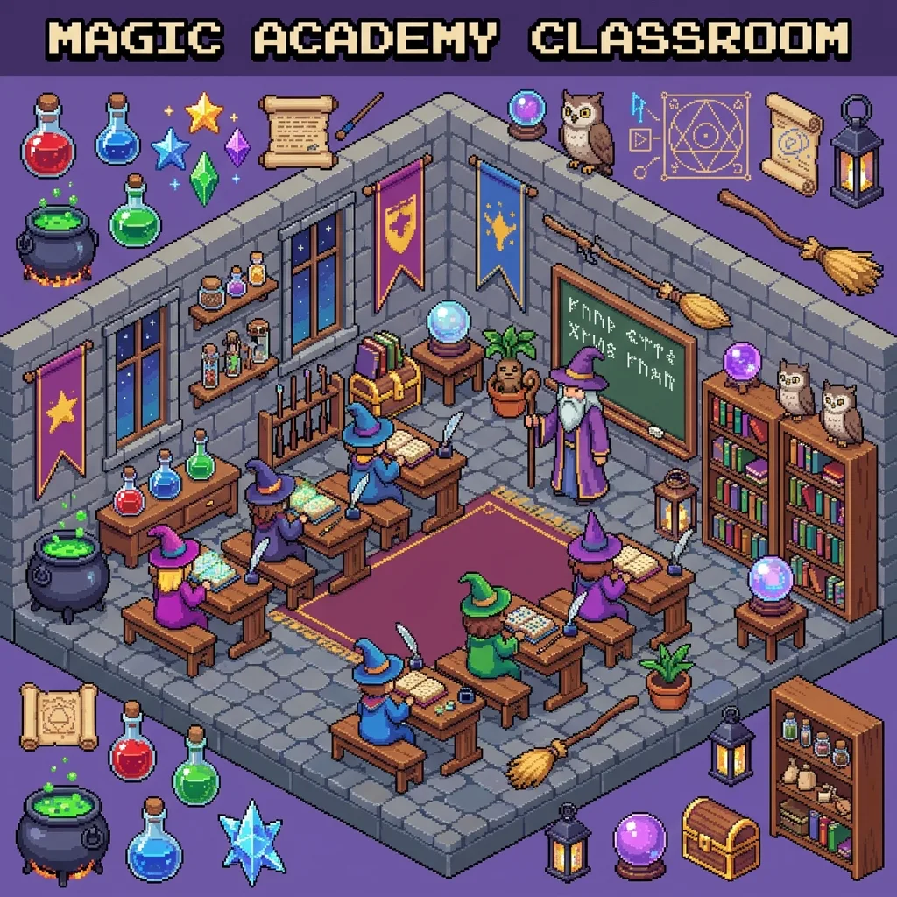

No-Prep Early Finisher Activities That Keep the Classroom Quiet
Every classroom has the kid who finishes the worksheet in four minutes and then needs something to do that isn't narrating the fact. The standard answers all have a catch: "read a book" works for readers, free drawing escalates, and anything requiring your attention defeats the point — you're mid-lesson with nineteen other students. What early finishers actually need is work that is self-contained (no instructions from you), self-checking (no grading pile), and genuinely wanted (or they won't choose it over chaos).

Why puzzle pages fit the job description
A spot-the-difference sheet checks every box: the instructions are the title, the answer key makes it self-checking, it's silent by nature, and — unlike another worksheet — it reads as a reward rather than more work. It also happens to be legitimate skill practice: visual discrimination, sustained attention, and systematic scanning are the same muscles behind fluent reading (the reason kindergarten screeners test "find the one that's different" — more in our visual discrimination guide). You can defend it to anyone who asks, including yourself.
Build the early-finisher folder in ten minutes
- Print 15–20 puzzles in your grade band's difficulty (below), plus the answer-key pages.
- One folder or hanging file per difficulty, labeled by color, not by "easy/hard" — nobody picks the folder labeled easy.
- Answer keys in a binder at the station, flagged by puzzle number. Checking your own work against the key is part of the activity, and it closes the loop without you.
- One rule on the folder: finished puzzles go in the tray, one puzzle out at a time. That's the entire management system.
By grade band
K–1: easy mode — large objects, about five bold differences. Pair with "circle it, then tell your neighbor in a whisper what changed" for a language bonus.
Grades 2–3: medium — eight or so differences with some sneaky ones. This band will race each other voluntarily; two copies of the same puzzle is an instant, silent competition.
Grades 4–5: hard mode — dense scenes, subtle changes. Frame it as a detective task and even your too-cool kids will take the folder. For older grades, the same format runs as an ESL information-gap speaking activity — eight variations in our ESL guide.
The rotation that keeps it alive
Early-finisher stations die of staleness: by October the fast kids have done every page in the folder twice. This is where a generator changes the economics — puzzles are unlimited and always new, so refilling the folder is a ten-minute monthly chore, not a Teachers-Pay-Teachers purchase. Rotate themes with the calendar (space in September, farm at harvest, winter scenes in December — seasonal versions in our Christmas and Halloween guides), and the station reads as new all year.
Teacher-tested management tips
- Make it earned, slightly. "Quality work first, then the puzzle folder" keeps the fast finishers from speed-running the actual assignment.
- Cap the streak. Two puzzles, then a book — otherwise your most competitive student will do eleven.
- Use it for morning work and bell-ringers too. The same folder covers arrival chaos, post-recess settling, and the sub folder (a sub with a puzzle station has a measurably better day).
- Dry-erase sleeves for the budget-conscious: ten sleeved puzzles plus wipes replace hundreds of copies, and wiping the sheet is somehow also an activity kids volunteer for.
Unlimited free printable puzzles — pick difficulty by grade band, answer keys print on their own page. No signup, no license worries.
Open the free generator
FAQ
What do you give students who finish early? Work that is self-contained, self-checking, and feels like a privilege: puzzle folders, silent reading, journal prompts. The failure mode to avoid is anything that needs your instructions or your grading — an early-finisher system only survives if it runs itself.
Are spot-the-difference puzzles educational enough for class time? They train visual discrimination, working memory, and sustained attention — foundational skills for reading fluency, with occupational therapists using the identical format clinically (see our OT guide). As early-finisher work, they're more defensible than most of what happens in the last ten minutes of a period.